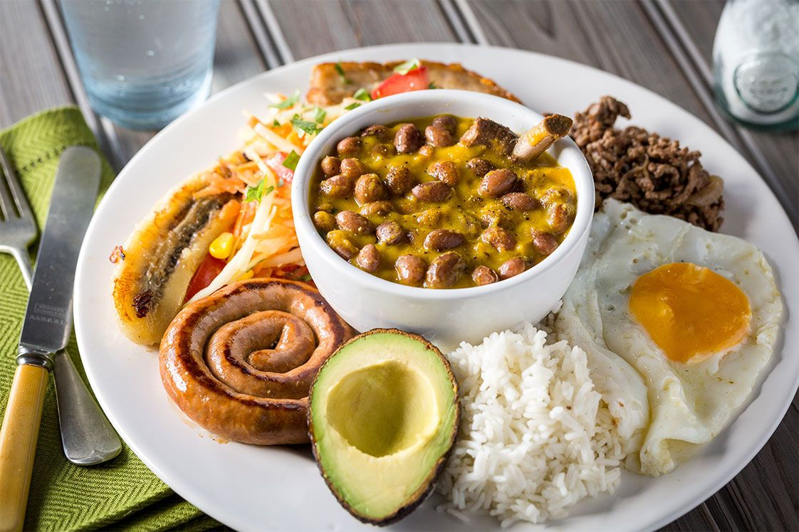
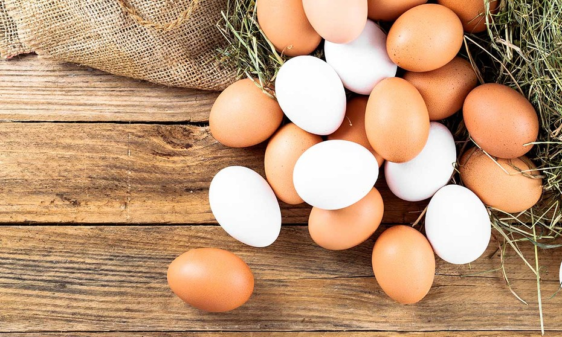

Historia
Esta historia no comienza con un “había una vez” ni mucho menos con un: por allá en el año no se tantos, Don Bernando Jaramillo, un campesino de la región antioqueña, por error hizo unos chorizos, chicharrones y morcillas, pa’l almuerzo, porque se antojó de combinar todo eso, mientras Doña Hernestina, su esposa, hizo los frijoles con garra, tan buenos que le quedaban, con un arrocito con huevo porque pensó que su marido, no se haría cargo de eso. Y así fue como toda esa comida, la montaron en bandejas pa’ alimentar al batallón de hijos que en la mesa se reunían, tras el largo viaje por las montañas que se pegaban cada día. No señores y señoras, la historia que buscan y que venimos a contar, puede que no tenga un cuento muy bonito e inspirador, pero es la puritica verdad, que tanto nos gusta pedir, y sin exageración venimos a contar: Los orígenes de este plata’o tan emblemático pa’ los paisas, son confusos, de hecho, no hay referencias, ni documentos, ni mucho menos registros del consumo de bandeja paisa, antes de la década de los años 60’. Pa’ nadie es un secreto que hemos consumido fríjoles desde que tenemos memoria, en el campo y en la ciudad, y que solos, no se han servido, se han acompañado, casi por estatuto, con arroz, plátano, arepa y carne. Pero se solía escoger una sola proteína, ya fuera chorizo, morcilla, posta, chicharrón, a veces costilla y cuando no había pa’ más, pues un huevo pa’ reemplazar. Aproximadamente en los años 60’, se fueron estableciendo restaurantes tipo mostrador, en diferentes municipios de Antioquia, en donde se ofrecían frijoles con diferentes carnes como acompañamiento. Los clientes se servían de todos los tipos de carne, en su derecho de “estar pagando”. Los establecimientos, al ver este comportamiento de los consumidores, un tanto exagerado, un tanto ostentoso, comenzaron a ofrecer la bandeja, como decimos lo nacidos en esta tierra: “con todos los juguetes”. Dando origen, después de muchas variaciones, que aún persisten, al plato como hoy lo conocemos: enorme y abundante, compuesto de frijoles, arroz, chicharrón, chorizo, carne molida, huevo frito, morcilla, tajada de maduro, arepa y aguacate. Servido en una vajilla amplia y ovalada (tipo bandeja). Y como si fuera poco, acompañado de tradicionales sobremesas, o mejor dicho, bebidas pa’ que entiendan mejor, como el claro*, la mazamorra* o refajo*. En resumidas cuentas, el origen de la bandeja paisa vendría a ser una evolución de la comida típica de los hogares antioqueños, transformada en un plato a la carta, que ganó aceptación, fieles y seguidores de toda la región, que convirtieron a este plato en una insignia de tradición.
Ingredientes
500gr de chicharrón

300gr de carne molida/picada
1 o 2 chorizos
1 aguacate maduro

1 zanahoria
1 plátano verde

1 huevo
Sal al gusto
50-80ml de aceite
250gr de arroz blanco
Ingredientes para el hogao

2-3 tomates
1 dientes de ajo
1 cebolla
Sal al gusto
Pimienta molida al gusto
2 cucharadas de aceite
Pre-preparación
Una pequeña muestra de como deben quedar los ingredientes y un pequeño vistazo del resultado final!